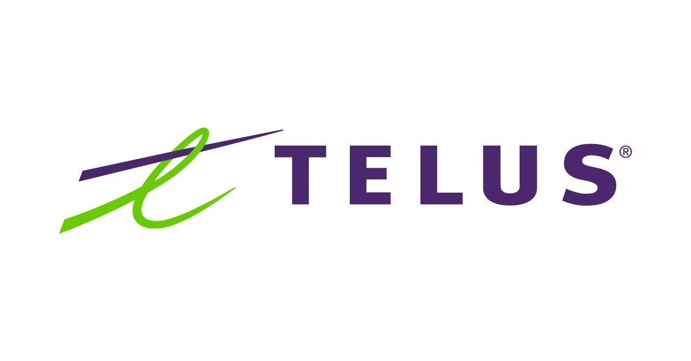

Continuité managériale
Votre meilleur dirigeant est votre plus grand risque.
Quand un poste clé repose sur une seule personne, votre stratégie devient fragile. Ixera réduit ce risque.
Continuité managériale
Votre stratégie repose sur quelques postes clés. C'est un risque. On le gère.
Avant l'urgence : savoir où vous êtes vulnérable et quoi faire. Développer, recruter, ajouter ou préparer la relève.
On éclaire le risque lié à votre équipe de direction, vos dépendances et les options disponibles dans le marché.
Le recrutement répond au besoin immédiat. La continuité managériale prépare la suite.
Selon McKinsey
Une mauvaise embauche
et va fragiliser la performance, la confiance et la continuité de votre organisation.
Approche
Comprendre ce que votre organisation doit devenir.
Diagnostic stratégique
Votre stratégie, votre SWOT, vos postes clés.
Identifier les personnes et les postes dont dépend l’exécution.
Cartographie
Structure, criticité, dépendances.
Accéder au marché des dirigeants avant que le besoin devienne urgent.
Recherche et évaluation
Talents passifs, liste courte, évaluations structurées.
Recruter, développer, ajouter, remplacer ou surveiller les postes clés pour réduire votre risque de leadership.
Recrutement et accompagnement
Recherche de dirigeants, revue des risques, relève.
Résultats
Ce que vous obtenez.
Savoir où est votre risque de leadership.
Voir qui est essentiel, qui peut prendre la relève et où il faut agir.
Accéder au marché des dirigeants avant que le besoin devienne urgent.
Recruter les bons dirigeants et garder des options ouvertes pour la suite.
Selon McKinsey
Le bon dirigeant au bon poste
et devient votre meilleur levier de croissance.
À propos
Ixera a été fondée par Jean-François Lavigne autour d’une conviction : les entreprises les plus performantes savent s’entourer des bonnes personnes pour relever les bons défis.
Nous aidons les dirigeants, propriétaires et conseils d’administration à renforcer leur équipe de direction et à structurer leur continuité managériale.
Notre approche combine la science, l’expérience, l’entrepreneuriat et les bons réseaux.
Voir venir. Choisir juste. Bâtir pour gagner.
Formé par

Notre gouvernance
Un Conseil à la hauteur de nos ambitions.
Ixera s’entoure d’un Conseil d’administration de haut niveau. Les membres seront dévoilés un à un d’ici le 1ᵉʳ septembre 2026.
Contact
Mettons-nous au travail.